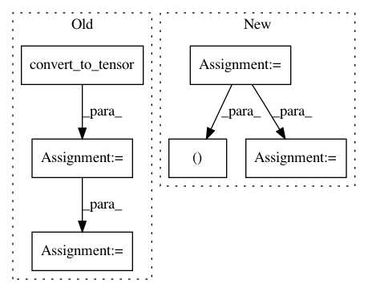

352ebffaa5bd74a454c3b2b10121b2d959ade2fc,opennmt/models/sequence_tagger.py,SequenceTagger,_build,#SequenceTagger#Any#Any#Any#Any#,49
Before Change
// predictions must contain tensors with the same batch size
// so replicate the transition matrix accordingly.
transition_params = tf.convert_to_tensor(transition_params)
transition_params = tf.expand_dims(transition_params, axis=0)
transition_params = tf.tile(transition_params, [tf.shape(logits)[0], 1, 1])
predictions["logits"] = logits
predictions["transition_params"] = transition_params
After Change
if self.crf_decoding:
transition_params = tf.get_variable(
"transitions", shape=[self.num_labels, self.num_labels])
labels, _ = crf_decode(
logits,
transition_params,
encoder_sequence_length)
labels = tf.cast(labels, tf.int64)
else:
probs = tf.nn.softmax(logits)
labels = tf.argmax(probs, axis=2)
In pattern: SUPERPATTERN
Frequency: 3
Non-data size: 6
Instances
Project Name: OpenNMT/OpenNMT-tf
Commit Name: 352ebffaa5bd74a454c3b2b10121b2d959ade2fc
Time: 2017-08-22
Author: guillaume.klein@systrangroup.com
File Name: opennmt/models/sequence_tagger.py
Class Name: SequenceTagger
Method Name: _build
Project Name: bethgelab/foolbox
Commit Name: a04525112543a5dbf77401cde45442932aeec368
Time: 2020-01-26
Author: git@jonasrauber.de
File Name: foolbox/ext/native/models/tensorflow.py
Class Name: TensorFlowModel
Method Name: _init_preprocessing
Project Name: horovod/horovod
Commit Name: af0153c72ff9ecd34db7db1d6c984cac44646bd0
Time: 2018-12-14
Author: tgaddair@gmail.com
File Name: horovod/tensorflow/__init__.py
Class Name: DistributedOptimizer
Method Name: compute_gradients